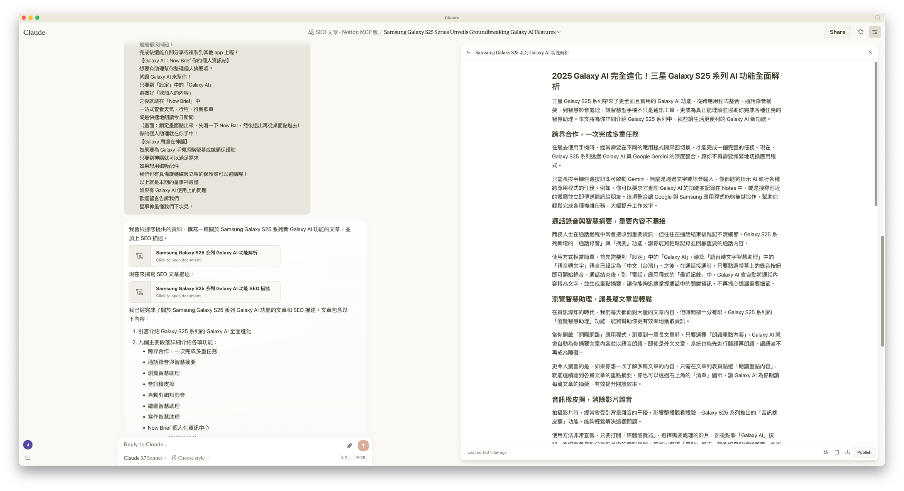
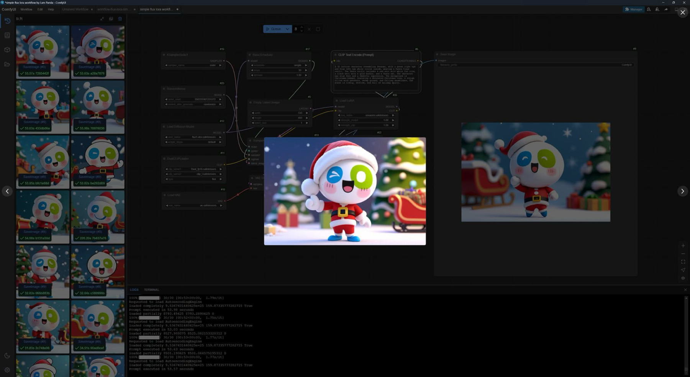
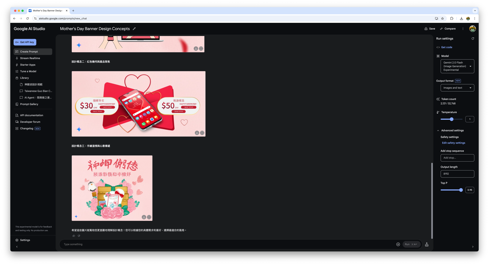

AI 在行銷中的應用場景
了解 AI 能夠協助的工作範疇與實際例子
AI 能為我做到什麼事？它可以為你收集資料、初稿生成、圖片影像生成、簡報排版視覺建議。
收集資料
以 Google Gemini 的 Deep Research 為例
- 提出研究需求
- 確認 AI 所提供的研究計劃
- 確認研究內容，並瀏覽資料來源核實

好處
減少資料尋找整理的時間
注意
需求越明確資料越準確，記得確認查核資料來源
初稿生成
以 Claude Pro 的 Projects 功能為例
- 上傳過往文本
- 設定專案指令
- 提供資料或需求

好處
快速生成基本內容，編修比從頭自己寫要快
注意
需注意檢查所生成文本是否為台灣用語
圖片影像生成
以在自有電腦上使用 ComfyUI 搭配自行訓練的 LoRA 為例
（電腦效能不夠也可以上 Google AI Studio 嘗試使用 Gemini 2.0 Flash (Image Generation) Experimental 模型
- 思考需求
- 藉由 AI 生成圖像，找到滿意的結果
- 做為溝通設計需求時的參考

好處
- 減少尋找示意素材的時間（電腦在生成的時候你可以去做其他事）
- 減少因為純文字溝通引起的誤會，降低溝通成本
以 Google AI Studio 使用 Gemini 2.0 Flash (Image Generation) Experimental 模型為例
- 思考需求
- 藉由 AI 生成圖像，找到滿意的結果
- 根據 AI 的回應，完善自己的想法
- 做為溝通設計需求時的參考

好處
- 減少尋找示意素材的時間
- 減少因為純文字溝通引起的誤會，降低溝通成本
簡報排版視覺建議
以 Microsoft 365 Copilot 為例
- 提出需求
- 讓 AI 生成簡報
- 根據生成結果調整

好處
減少排版時間，可以專注在內容上
注意
生成的簡報可能需要調整以符合公司風格